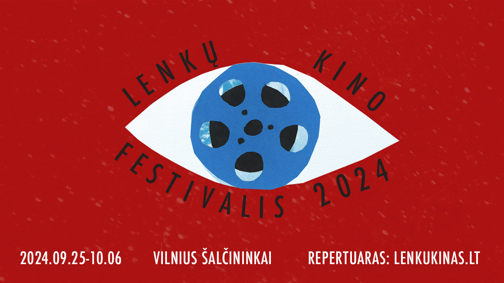
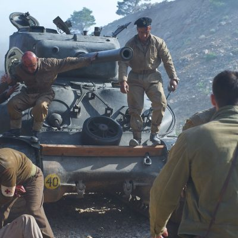
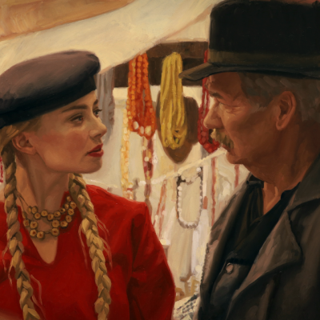
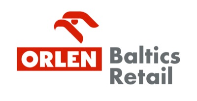
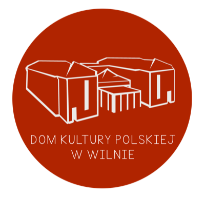
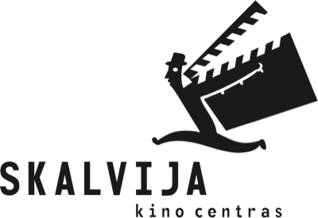
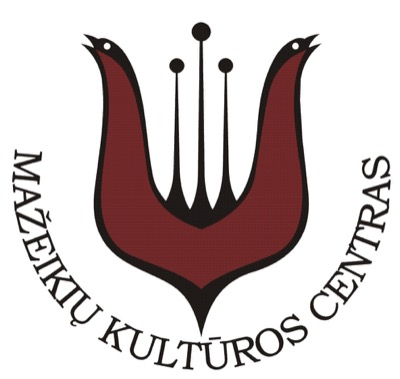
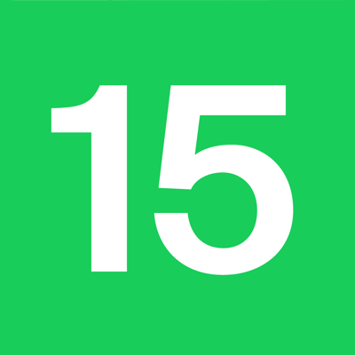
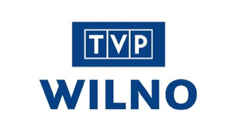
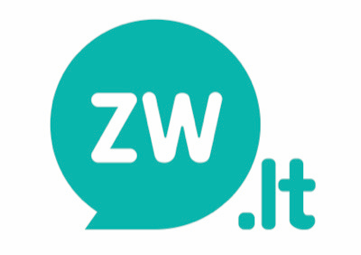

2024.09.25 — 10.06 · Vilnius · Kaunas · Šalčininkai · Mažeikiai
Lenkų kino festivalis 2024
Ryškiausi pastarųjų metų lenkų kino kūriniai — nuo apdovanojimus pelniusių dramų iki animacijos — keturiuose Lietuvos miestuose. Renginius organizuoja Lenkijos institutas Vilniuje.

12festivalio dienų
4Lietuvos miestai
12partnerių ir rėmėjų
18-asfestivalio sezonas
Visas repertuaras

Raudonos aguonos (Czerwone maki)
Vilnius · Šalčininkai · Mažeikiai

Kaimiečiai (Chłopi)
Vilnius · Kaunas · Šalčininkai
Pasirinktame mieste seansų šiuo metu nėra.
Filmų tvarkaraštis
2024 m. festivalio programa
| Data | Laikas | Filmas | Miestas | Vieta |
|---|---|---|---|---|
| 09.25, trečiadienis | 19:00 | Raudonos aguonos | Vilnius | Multikino |
| 09.27, penktadienis | 18:30 | Kaimiečiai | Vilnius | Kino centras „Skalvija“ |
| 09.29, sekmadienis | 17:00 | Kaimiečiai | Kaunas | Kauno kino teatras |
| 10.02, trečiadienis | 18:00 | Raudonos aguonos | Šalčininkai | Šalčininkų kultūros centras |
| 10.03, ketvirtadienis | 18:00 | Kaimiečiai | Šalčininkai | Šalčininkų kultūros centras |
| 10.06, sekmadienis | 16:00 | Raudonos aguonos | Mažeikiai | Mažeikių kultūros centras |
Į visus seansus įėjimas nemokamas. Vietų skaičius ribotas.
Partneriai ir rėmėjai






